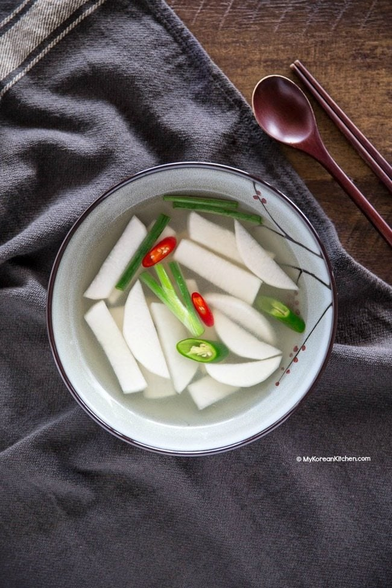

Dongchimi

What is Dongchimi?
Dongchimi is a type of water-based kimchi that is made with daikon radish, napa cabbage, and other vegetables. The word "dongchimi" literally
means "winter water kimchi," as it is traditionally eaten in the winter months. Dongchimi is known for its clear, refreshing flavor and crunchy texture. It is
often served as a side dish to rich or spicy main dishes in Korean cuisine. Additionally, the liquid from dongchimi, called "dongchimi water," is a popular
beverage in Korea, particularly during the hot summer months, as it is believed to have a cooling effect on the body.
Ingredients
- 8 medium Korean radishes, or daikon radishes, peeled and sliced into 1-inch pieces
- 6 tablespoons sea salt (divided)
- 4 tablespoons sugar (divided)
- 10 cups water (warm)
- 4 garlic cloves, peeled and thinly sliced
- 4 medium green onions, sliced into 2-inch pieces
Steps
- Place the radishes in a bowl and coat with 3 tablespoons of the salt and 2 tablespoons of the sugar. Let stand for one day at room temp.
- After one day, dissolve the remaining 3 tablespoons salt and 2 tablespoons sugar in the warm water.
- Add the liquid to the salted radishes; stir in the thinly sliced garlic and green onions. Let stand for one to two days at room temperature.
- The white radish kimchi is ready when the liquid has achieved a tart, vinegary flavor.
- To serve, ladle the vegetables and a generous amount of liquid into a cup or small bowl.
Original Recipe